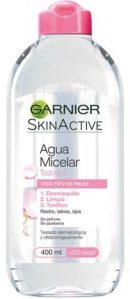
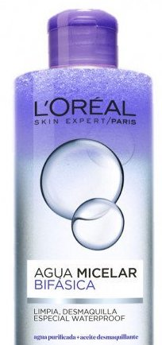
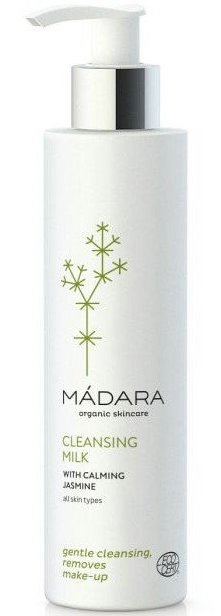
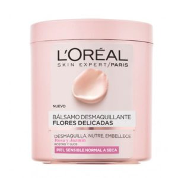

Para hacer maquillajes perfectos, es muy importante el cuidado de tu piel, debemos saber como desmaquillarnos
correctamente para no estropearnos la cara
Los mejores productos desmaquillantes
Agua Micelar Todo en Uno, de Garnier: desmaquilla, limpia y tonifica, y es apto para todo tipo de pieles, además con un precio muy
asequible
Agua Micelar Bifásica, de L’oreal Paris: especial para eliminar el maquillaje waterproof.
Especial para pieles sensibles.
Leche limpiadora desmaquillante, de Madara:limpia e hidrata la piel con ingredientes
naturales
como la avena, flor de tilo, caléndula y plántago.
Bálsamo desmaquillante Flores Delicadas, de L’oreal Paris: limpia y elimina los restos de maquillaje
en
profundidad sin dañar ni resecar la piel del rostro.




Rutina facial
Selecciona el mejor desmaquillador para tu tipo de piel: vas a necesitar por lo menos tres:
desmaquillador
de ojos, leche desmaquilladora o gel para eliminar la suciedad principal, y al final una loción o un
agua micelar para una limpieza más profunda.
Mójate la cara
Empieza por desmaquillar los ojos: usarás un disco desmaquillador, bien empapado de desmaquillador, póntelo
sobre el párpado y frota suavemente para eliminar la máscara de pestañas y demás maquillaje desde la raíz del pelo a la punta y suavemente tira hacia afuera.
Elimina de la piel las mayores impurezas: tras desmaquillar los ojos viene la cara. Pon desmaquillador en un disco limpio y haz movimientos desde el centro de la cara hacia afuera.